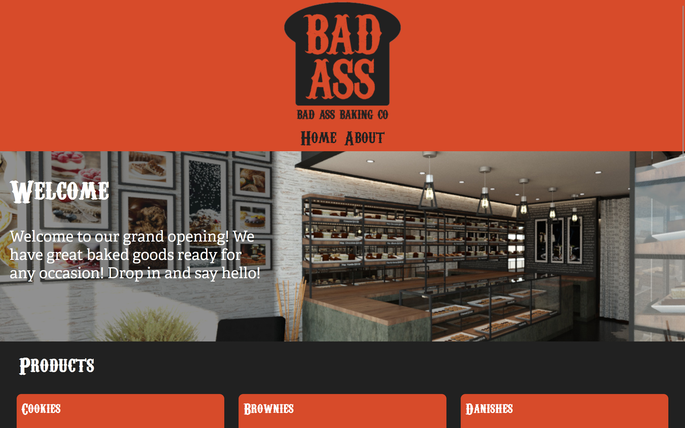
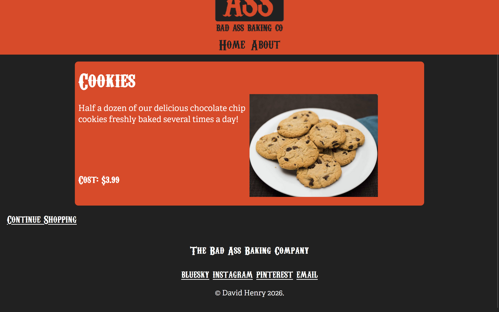
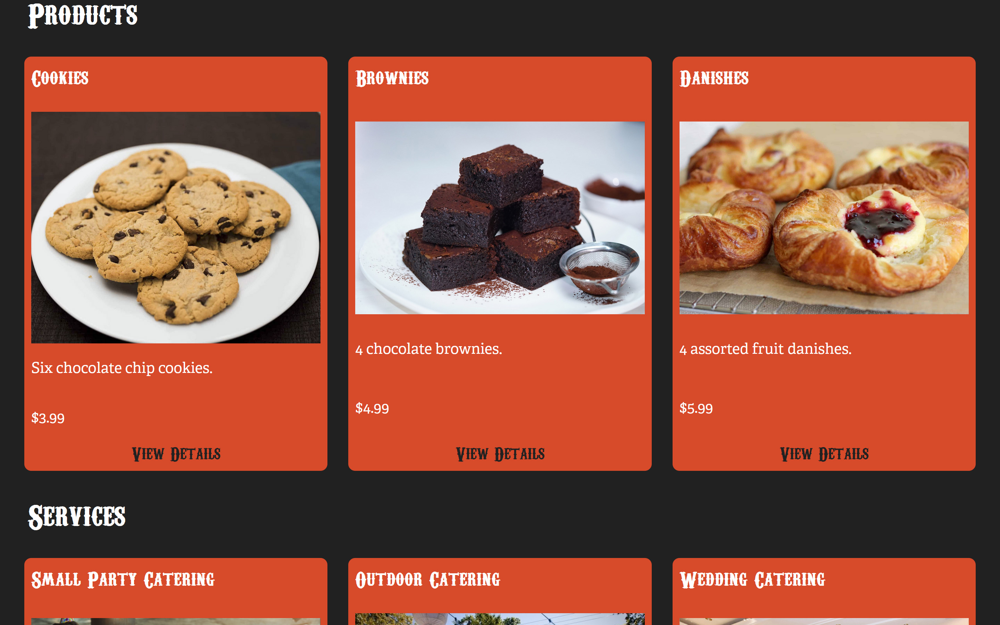
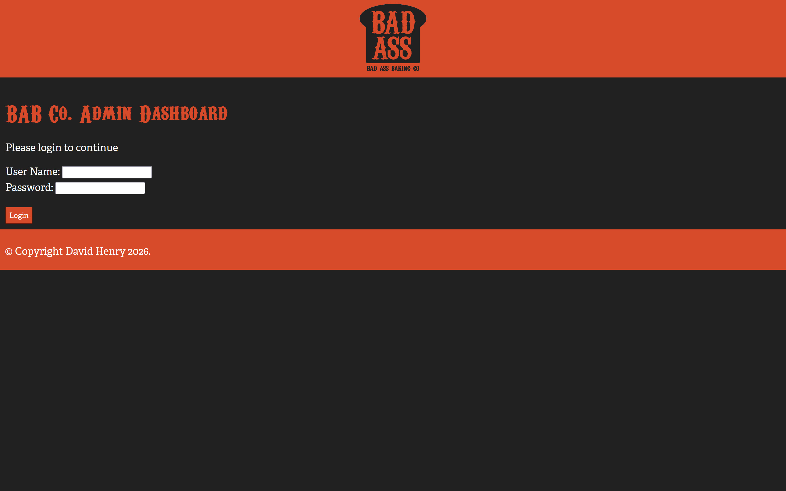
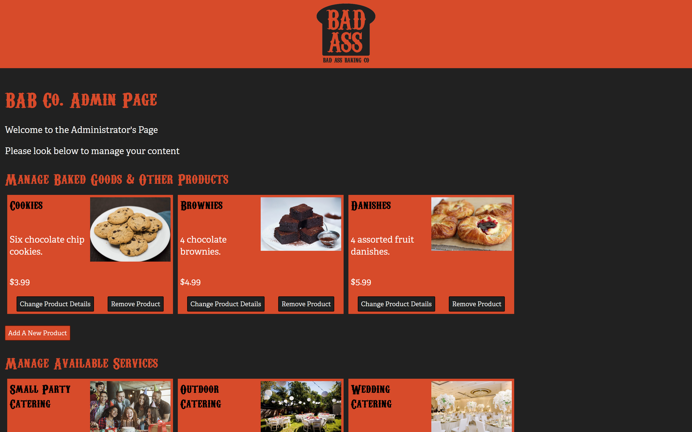
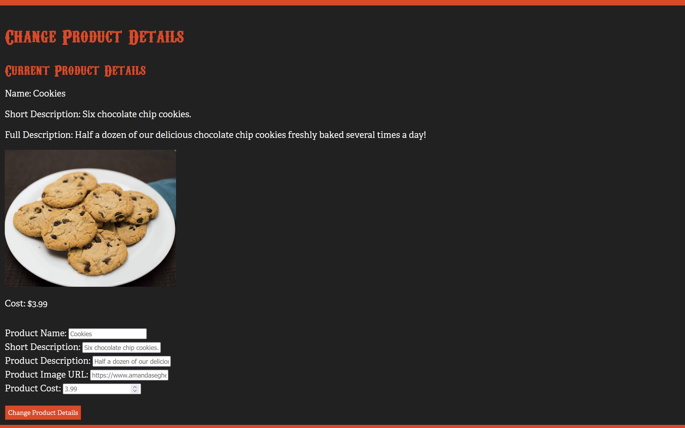

Bad Ass Bakery - Front & Back End Websites
A website for an edgy bakery. The front-end site includes a list of products and services with a details page for each item, and an about page. This Front-End website uses React and connects to an API, which is controlled from a MongoDB database.
Front-End Website


The Back-End site is a CMS where an admin can add, edit, or remove products and services as needed and update the API accordingly. It uses node.js modules such as Express and Pug.
Back-End Dashboard Website


For the Branding & Style Guide for this project, Click Here.
Work In Progress:
- Dashboard Login
- Shopping Cart/Online Orders